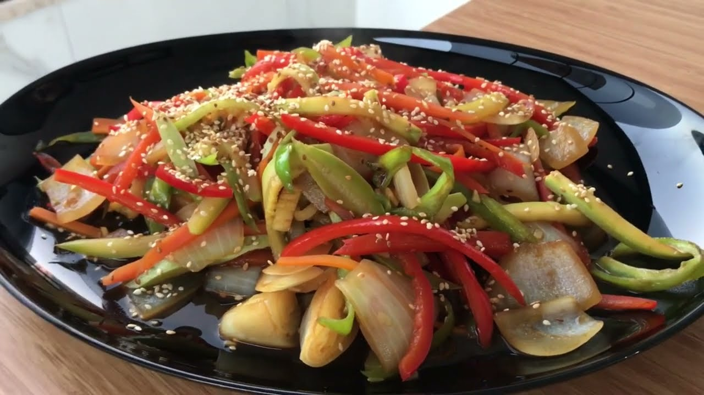
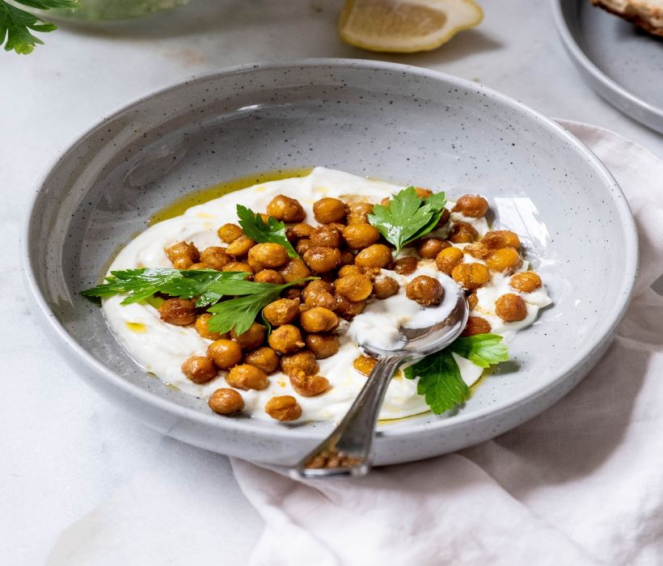
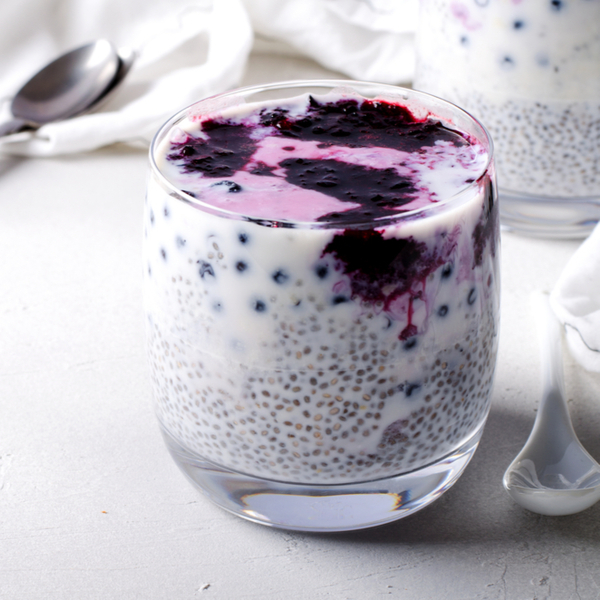

Yulaflı Muzlu Pankek
- 1 adet olgun muz
- 1 yumurta
- 4 yemek kaşığı yulaf ezmesi
- Yarım çay kaşığı tarçın
Hazırlanışı: Malzemeleri blenderdan geçirip tavada pişirin. Üzerine taze meyveler ekleyin.
- 1 kabak, 1 havuç, 1 kırmızı biber
- 1 diş sarımsak
- 2 yemek kaşığı zeytinyağı
Zeytinyağlı Sebze Sote
Hazırlanışı: Sebzeleri doğrayıp zeytinyağında soteleyin. Sarımsakla tatlandırıp sıcak veya soğuk servis edin.
Yoğurtlu Nohut Salatası
- 1 su bardağı haşlanmış nohut
- 4 yemek kaşığı yoğurt
- 1 diş sarımsak, taze nane, dereotu
Hazırlanışı: Yoğurt ve sarımsağı karıştır, diğer malzemeleri ekle. Hafif, tok tutan bir öğündür.
Chia Tohumlu Meyveli Puding
- 1 su bardağı süt (bitkisel olabilir)
- 2 yemek kaşığı chia tohumu
- 1 tatlı kaşığı bal
- Meyve dilimleri (muz, çilek, yaban mersini)
Hazırlanışı: Süt, chia ve balı karıştır, 1 gece buzdolabında beklet. Ertesi gün meyvelerle süsle.